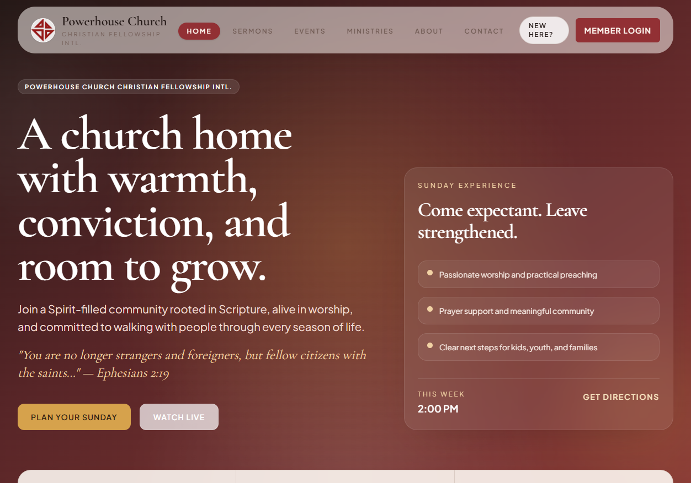
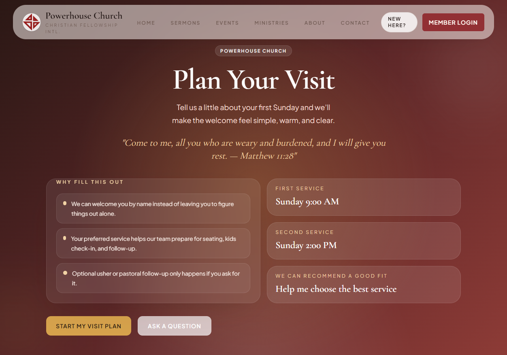
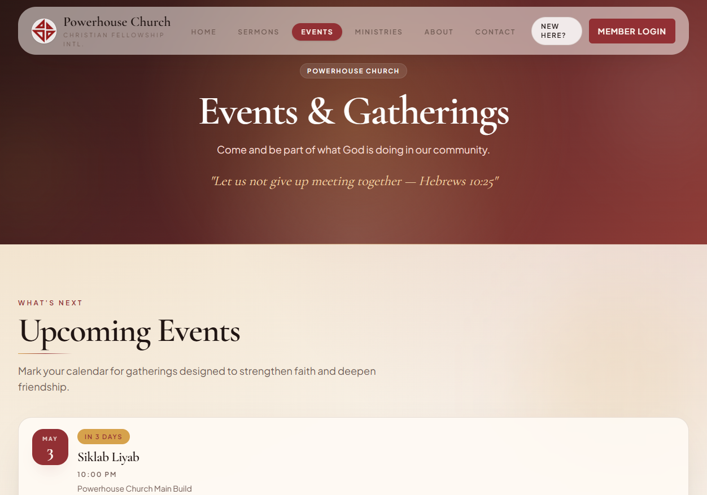

This platform is more than a church homepage. It combines public outreach, first-time guest follow-up, member engagement, and admin operations in one connected experience.
Pages for worship, events, sermons, giving, contact, prayer, and first-time guests.
Private tools for dashboard, directory, community, attendance, care, and engagement.
Operational screens for events, reports, sermons, communications, prayers, and visit plans.
The website is structured around a clear ministry funnel: welcome new people, nurture existing members, and equip staff and leaders to follow through.
Home, about, ministries, live stream, events, prayer request, giving, contact, gallery, sermons, blog, and plan-your-visit.
Personal dashboard, community reflections, attendance visibility, directory access, care workflows, and engagement tracking.
Event registration, reminder emails, reports, communications, prayer workflows, visit-plan follow-up, and audit visibility.
The site turns ministry intent into repeatable digital workflows.
Visitor lands on the homepage, plans a first visit, receives follow-up, joins events, and eventually becomes an engaged portal user.

Warm, confident visual language paired with direct calls to action like “Plan Your Sunday” and “Watch Live.”
The site immediately tells visitors what kind of church this is: Spirit-filled, Scripture-rooted, and community-oriented.
Primary actions move people into live attendance, first-time planning, sermons, and events without making them search.
Latest message and upcoming events are loaded dynamically, helping the website stay current week to week.
This is not just an information page. It is a practical intake flow that helps the church prepare for a person before they arrive.
Learn what to expect on a Sunday.
Choose service timing and visit date.
Share kids and follow-up needs.
Trigger confirmation and internal follow-up.
Ushers, pastoral staff, and kids ministry receive cleaner context so the experience can feel personal rather than reactive.

The form supports service selection, kids details, and optional follow-up while keeping the tone warm and accessible.

Upcoming events can collect registrations, manage capacity, waitlists, and even offer calendar add-to options.
Visitors and members can continue engaging with messages and church life throughout the week.
The site offers multiple practical ways for someone to respond instead of remaining a passive viewer.
Event registrations feed real workflows, including confirmation emails and downloadable or Google Calendar links.
Attendance consistency, latest sermon, quick actions, and engagement summaries.
Members can share devotion posts, respond to prompts, and engage around weekly sermon content.
A more relational experience than a public site alone, especially for cell-group life and follow-up.
Rather than ending after a service, sermons, reflections, care, and attendance all continue inside the portal.
The portal also adapts by role. Members see personal and community tools, while leaders can surface attendance summaries and care alerts for their groups.
Admins can manage events, registration limits, waitlists, check-ins, roster exports, and reminder emails.
Leadership dashboards track trends across attendance and member growth with CSV export support.
The system supports prayer follow-up, visitor tracking, and care visibility for pastors and leaders.
Sermons, posts, ministries, settings, and communications are manageable from admin routes.
Members, cell groups, and kids ministry data connect to actual pastoral workflows.
Audit logging is built into sensitive report-export and admin actions.
Admin tooling reduces spreadsheet handoffs and manual follow-up work.
Events, sermons, settings, authentication, public forms, and reporting all run from a shared application and data layer.
Public submissions use rate limiting and spam protection patterns, while login and account workflows are handled through dedicated auth flows.
The route structure and data model leave room for richer mobile experiences, tighter analytics, more ministry modules, and stronger shared services later.
Existing tests focus on auth decisions, public submissions, RSVP handling, and rate limiting.
The site gives first-time guests a low-friction path into real human follow-up.
Members can continue in sermons, community, care, and engagement throughout the week.
Leaders gain cleaner reporting, simpler event workflows, and better visibility across ministry activity.
“Powerhouse Church now has a digital platform that does not just describe the ministry. It actively helps the ministry happen.”
Optional next discussion after the presentation: which workflows should be prioritized next for polish, automation, or rollout support.